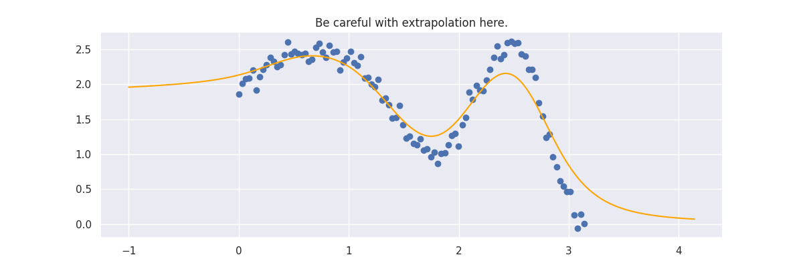
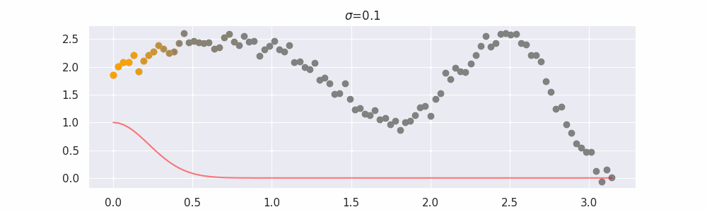
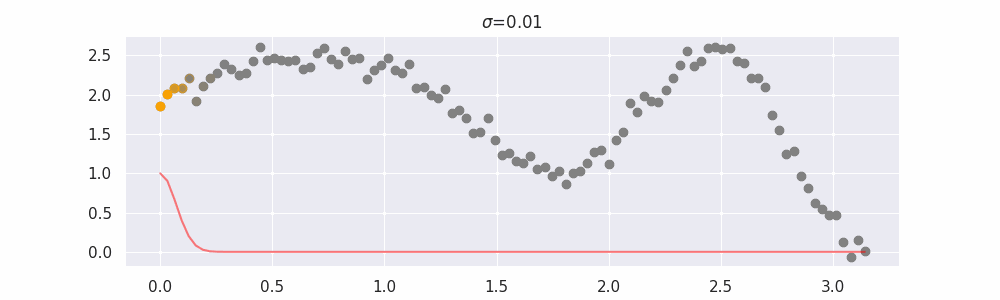
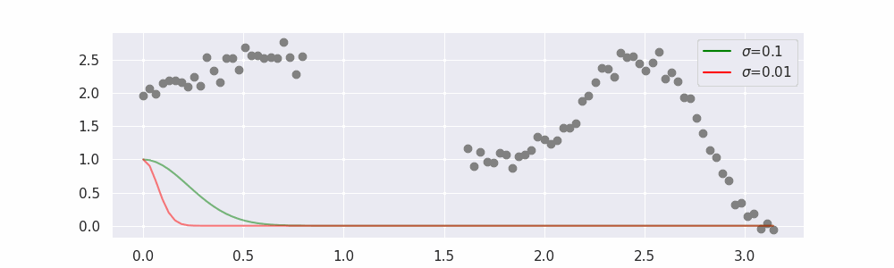
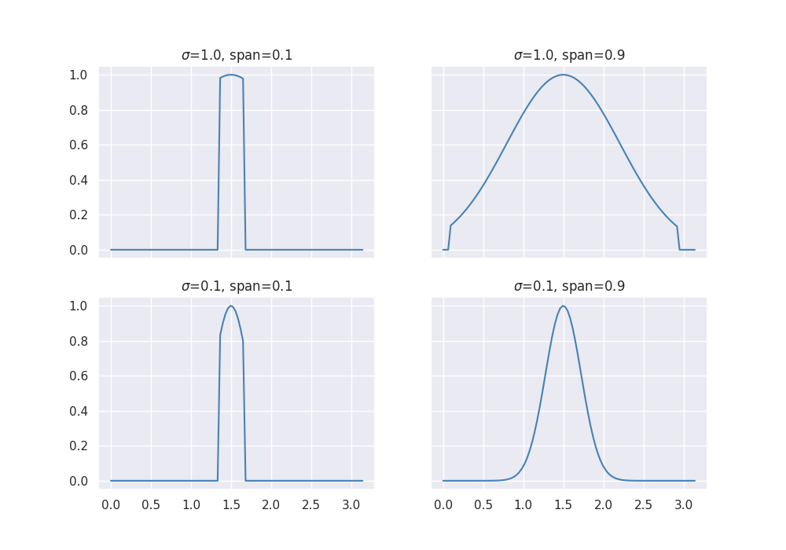
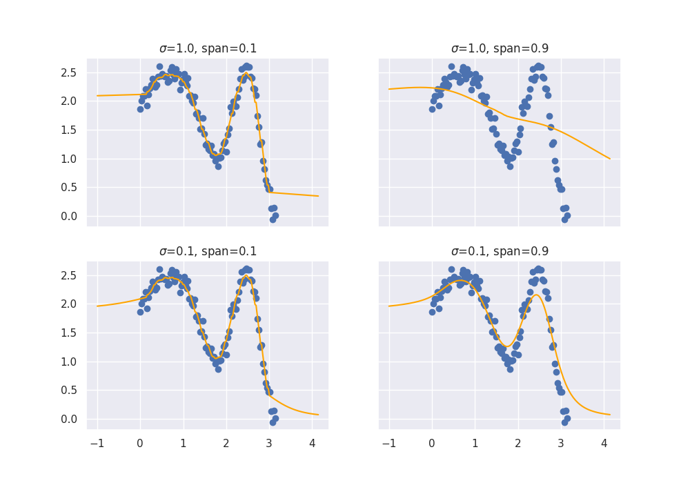
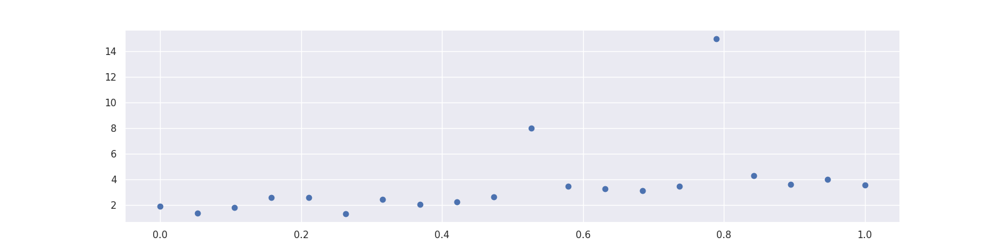
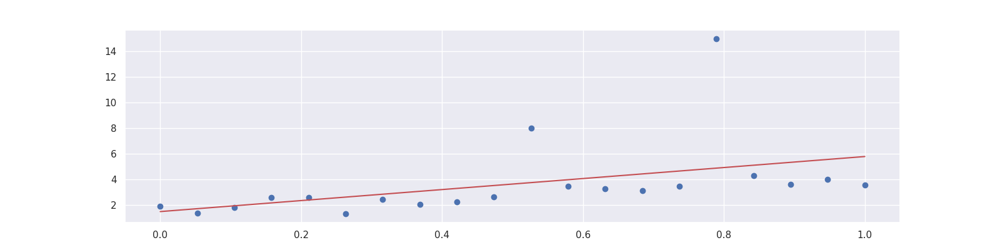
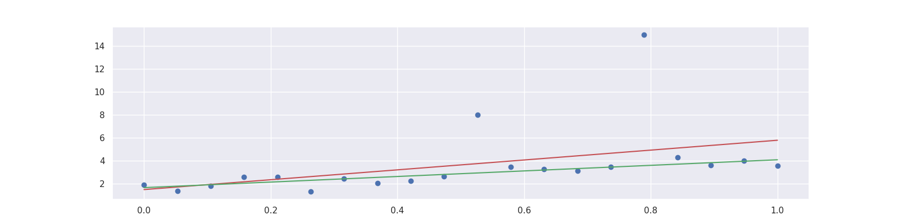
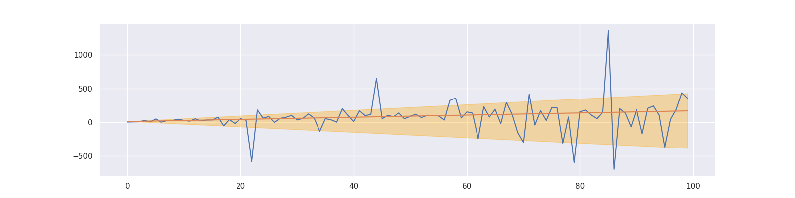

Linear Models¶
There's a few linear models out there that we felt were generally useful. This document will highlight some of them.
LOWESS¶
Lowess stands for LOcally WEighted Scatterplot Smoothing and has historically been used for smoothing but you can also use it for machine learning where you're interested in interpolating. Here's a demo of LowessRegression in action:
import numpy as np
from sklego.linear_model import LowessRegression
n = 100
xs = np.linspace(0, np.pi, n)
ys = 1 + np.sin(xs) + np.cos(xs**2) + np.random.normal(0, 0.1, n)
mod = LowessRegression(sigma=0.1).fit(xs.reshape(-1, 1), ys)
xs_new = np.linspace(-1, np.pi + 1, n * 2)
preds = mod.predict(xs_new.reshape(-1, 1))
Code for plot generation
plt.figure(figsize=(12, 4))
plt.scatter(xs, ys)
plt.plot(xs_new, preds, color="orange")
plt.title("Be careful with extrapolation here.")
plt.savefig(_static_path / "lowess.png")
plt.clf()
def plot_grid_weights(sigmas, spans):
n, m = len(sigmas), len(spans)
_, axes = plt.subplots(n, m, figsize=(10, 7), sharex=True, sharey=True)
for i, ax in enumerate(axes.flat):
span = spans[i % m]
sigma = sigmas[int(i / n) % m]
mod = LowessRegression(sigma=sigma, span=span).fit(xs.reshape(-1, 1), ys)
wts = mod._calc_wts([1.5])
ax.plot(xs, wts, color="steelblue")
ax.set_title(f"$\sigma$={sigma}, span={span}")
return axes
fig = plot_grid_weights(sigmas=[1.0, 0.1], spans=[0.1, 0.9])
plt.savefig(_static_path / "grid-span-sigma-01.png")
plt.clf()
def plot_spansigma(sigmas, spans):
n, m = len(sigmas), len(spans)
_, axes = plt.subplots(n, m, figsize=(10, 7), sharex=True, sharey=True)
for i, ax in enumerate(axes.flat):
span = spans[i % m]
sigma = sigmas[int(i / n) % m]
mod = LowessRegression(sigma=sigma, span=span).fit(xs.reshape(-1, 1), ys)
preds = mod.predict(xs_new.reshape(-1, 1))
ax.scatter(xs, ys)
ax.plot(xs_new, preds, color="orange")
ax.set_title(f"$\sigma$={sigma}, span={span}")
return axes
fig = plot_spansigma(sigmas=[1.0, 0.1], spans=[0.1, 0.9])
plt.savefig(_static_path / "grid-span-sigma-02.png")
plt.clf()
@gif.frame
def single_frame(i, sigma, with_pred=False):
mod = LowessRegression(sigma=sigma).fit(xs.reshape(-1, 1), ys)
preds = mod.predict(xs.reshape(-1, 1))
plt.figure(figsize=(10, 3))
wts = mod._calc_wts(xs[i])
plt.scatter(xs, ys, color="gray")
plt.plot(xs, wts, color="red", alpha=0.5)
for j in range(len(xs)):
plt.scatter([xs[j]], [ys[j]], alpha=wts[j], color="orange")
if with_pred:
plt.plot(xs[:i], preds[:i], color="red")
plt.title(f"$\sigma$={sigma}")
for sigma, name, with_pred in zip((0.1, 0.1, 0.01), ("01", "01", "001"), (False, True, True)):
frames = [single_frame(i, sigma, with_pred=with_pred) for i in range(100)]
suffix = f"{'-' + name if with_pred else ''}"
gif.save(frames, str(_static_path / f"lowess-rolling{suffix}.gif"), duration=100)
n = 100
xs_orig = xs_sparse = np.linspace(0, np.pi, n)
ys_sparse = 1 + np.sin(xs_sparse) + np.cos(xs_sparse**2) + np.random.normal(0, 0.1, n)
keep = (xs_sparse < 0.8) | (xs_sparse > 1.6)
xs_sparse, ys_sparse = xs_sparse[keep], ys_sparse[keep]
mod_small = LowessRegression(sigma=0.01).fit(xs.reshape(-1, 1), ys)
mod_big = LowessRegression(sigma=0.1).fit(xs.reshape(-1, 1), ys)
preds_small = mod_small.predict(xs_orig.reshape(-1, 1))
preds_big = mod_big.predict(xs_orig.reshape(-1, 1))
@gif.frame
def double_frame(i):
plt.figure(figsize=(10, 3))
wts_small = mod_small._calc_wts(xs_orig[i])
wts_big = mod_big._calc_wts(xs_orig[i])
plt.scatter(xs_sparse, ys_sparse, color="gray")
plt.plot(xs_orig, wts_big, color="green", alpha=0.5)
plt.plot(xs_orig, wts_small, color="red", alpha=0.5)
plt.plot(xs_orig[:i], preds_big[:i], color="green", label="$\sigma$=0.1")
plt.plot(xs_orig[:i], preds_small[:i], color="red", label="$\sigma$=0.01")
plt.legend()
frames = [double_frame(i) for i in range(len(xs))]
gif.save(frames, str(_static_path / "lowess-two-predictions.gif"), duration=100)
################################# ProbWeightRegression ###################################
##########################################################################################
from sklearn.datasets import make_regression
import pandas as pd
X, y = make_regression(n_samples=1000, n_features=10, random_state=42)
df = pd.DataFrame(X)
from sklearn.pipeline import Pipeline, FeatureUnion
from sklearn.linear_model import LinearRegression
from sklearn.decomposition import PCA
from sklearn.model_selection import GridSearchCV
from sklego.meta import EstimatorTransformer
from sklego.linear_model import ProbWeightRegression
from sklego.preprocessing import ColumnSelector
pipe = Pipeline([
("models", FeatureUnion([
("path1", Pipeline([
("select1", ColumnSelector([0, 1, 2, 3, 4])),
("pca", PCA(n_components=3)),
("linear", EstimatorTransformer(LinearRegression()))
])),
("path2", Pipeline([
("select2", ColumnSelector([5,6,7,8,9])),
("pca", PCA(n_components=2)),
("linear", EstimatorTransformer(LinearRegression()))
]))
])),
("prob_weight", ProbWeightRegression())
])
grid = GridSearchCV(estimator=pipe, param_grid={}, cv=3).fit(df, y)
from sklearn import set_config
set_config(display="diagram")
grid
from sklearn.utils import estimator_html_repr
with open(_static_path / "grid.html", "w") as f:
f.write(estimator_html_repr(grid))
grid.best_estimator_[1].coefs_
# array([0.03102466, 0.96897535])
#################################### LADRegression #######################################
##########################################################################################
import numpy as np
np.random.seed(0)
X = np.linspace(0, 1, 20)
y = 3 * X + 1 + 0.5 * np.random.randn(20)
X = X.reshape(-1, 1)
y[10] = 8
y[15] = 15
plt.figure(figsize=(16, 4))
plt.scatter(X, y)
plt.savefig(_static_path / "lad-data.png")
plt.clf()
import numpy as np
from sklearn.linear_model import LinearRegression
x = np.array([0, 1]).reshape(-1, 1)
plt.figure(figsize=(16, 4))
plt.scatter(X, y)
plt.plot(x, LinearRegression().fit(X, y).predict(x), "r");
plt.savefig(_static_path / "lr-fit.png")
plt.clf()
import numpy as np
from sklearn.linear_model import LinearRegression
from sklego.linear_model import LADRegression
x = np.array([0, 1]).reshape(-1, 1)
plt.figure(figsize=(16, 4))
plt.scatter(X, y)
plt.plot(x, LinearRegression().fit(X, y).predict(x), "r");
plt.plot(x, LADRegression().fit(X, y).predict(x), "g");
plt.savefig(_static_path / "lad-fit.png")
plt.clf()
################################# QuantileRegression #####################################
##########################################################################################
import numpy as np
from sklego.linear_model import QuantileRegression
np.random.seed(123)
X = np.arange(100).reshape(-1, 1)
y = 2*X.ravel() + X.ravel()*np.random.standard_cauchy(100)
q_10 = QuantileRegression(quantile=0.1).fit(X, y)
q_90 = QuantileRegression(quantile=0.9).fit(X, y)
lad = QuantileRegression().fit(X, y)
plt.plot(X, y)
plt.plot(X, lad.predict(X))
plt.fill_between(X.ravel(), q_10.predict(X), q_90.predict(X), alpha=0.33, color="orange");
plt.savefig(_static_path / "quantile-fit.png")
plt.clf()

The line does not look linear but that's because internally, during prediction, many weighted linear regressions are happening. The gif below demonstrates how the data is being weighted when we would make a prediction.

Details on sigma¶
We'll also show two different prediction outcomes depending on the hyperparameter sigma:

You may be tempted now to think that a lower sigma always has a better fit, but you need to be careful here. The data might have gaps and larger sigma values will be able to properly regularize.

Note that this regression also works in higher dimensions but the main downside of this approach is that it is really slow when making predictions.
If you want to get advanced there's also a hyperparameter span but you'll really need to know what you're doing.
It was added for completeness but the authors of this package have yet to find a proper usecase for it.
Details on span¶
The span parameter can be used to force that you'll only include a certain percentage of your dataset.
Technically without a span you are still using all the data in your dataset, albeit with small weights if they are far
away.
The effect of the span parameter on the weights can be seen below:

This will also effect the predictions.

You may need to squint your eyes a bit to see it, but lower spans cause more jiggles and less smooth curves.
ProbWeightRegression¶
Note, this is a somewhat experimental feature. We found this feature to be plausibly useful but we've not seen it cause a big "win" yet.
Let's say that you're interested in combining a few models for a regression task.
You could put them together in an ensemble. Say we've got predictions \(y_1, y_2, y_3\), each of which come from respectable models, then you may want to combine these together in another linear regression.
This way the new, hopefully best, prediction \(y_*\) is defined via:
This can be a valid way of reweighing. But there's one issue: technically the weights \(w_1, w_2, w_3\) can sum to a number that isn't one. Since that's numerically totally possible we need to be aware that we can end up in a strange situation.
The ProbWeightRegression addresses this by assuming that every input it receives is the output of a model and it will ensure that they are reweighed with a constraint in mind. For this usecase, it would optimise:
The final positivity constraint is optional in our model.
Here's an example usage of ProbWeightRegression in action:
from sklearn.datasets import make_regression
import pandas as pd
X, y = make_regression(n_samples=1000, n_features=10, random_state=42)
df = pd.DataFrame(X)
We've turned the array into a dataframe so that we can apply the ColumnSelector.
from sklearn.pipeline import Pipeline, FeatureUnion
from sklearn.linear_model import LinearRegression
from sklearn.decomposition import PCA
from sklearn.model_selection import GridSearchCV
from sklego.meta import EstimatorTransformer
from sklego.linear_model import ProbWeightRegression
from sklego.preprocessing import ColumnSelector
pipe = Pipeline([
("models", FeatureUnion([
("path1", Pipeline([
("select1", ColumnSelector([0, 1, 2, 3, 4])),
("pca", PCA(n_components=3)),
("linear", EstimatorTransformer(LinearRegression()))
])),
("path2", Pipeline([
("select2", ColumnSelector([5,6,7,8,9])),
("pca", PCA(n_components=2)),
("linear", EstimatorTransformer(LinearRegression()))
]))
])),
("prob_weight", ProbWeightRegression())
])
grid = GridSearchCV(estimator=pipe, param_grid={}, cv=3).fit(df, y)
GridSearchCV(cv=3,
estimator=Pipeline(steps=[('models',
FeatureUnion(transformer_list=[('path1',
Pipeline(steps=[('select1',
ColumnSelector(columns=[0,
1,
2,
3,
4])),
('pca',
PCA(n_components=3)),
('linear',
EstimatorTransformer(estimator=LinearRegression()))])),
('path2',
Pipeline(steps=[('select2',
ColumnSelector(columns=[5,
6,
7,
8,
9])),
('pca',
PCA(n_components=2)),
('linear',
EstimatorTransformer(estimator=LinearRegression()))]))])),
('prob_weight',
ProbWeightRegression())]),
param_grid={})In a Jupyter environment, please rerun this cell to show the HTML representation or trust the notebook. On GitHub, the HTML representation is unable to render, please try loading this page with nbviewer.org.
GridSearchCV(cv=3,
estimator=Pipeline(steps=[('models',
FeatureUnion(transformer_list=[('path1',
Pipeline(steps=[('select1',
ColumnSelector(columns=[0,
1,
2,
3,
4])),
('pca',
PCA(n_components=3)),
('linear',
EstimatorTransformer(estimator=LinearRegression()))])),
('path2',
Pipeline(steps=[('select2',
ColumnSelector(columns=[5,
6,
7,
8,
9])),
('pca',
PCA(n_components=2)),
('linear',
EstimatorTransformer(estimator=LinearRegression()))]))])),
('prob_weight',
ProbWeightRegression())]),
param_grid={})Pipeline(steps=[('models',
FeatureUnion(transformer_list=[('path1',
Pipeline(steps=[('select1',
ColumnSelector(columns=[0,
1,
2,
3,
4])),
('pca',
PCA(n_components=3)),
('linear',
EstimatorTransformer(estimator=LinearRegression()))])),
('path2',
Pipeline(steps=[('select2',
ColumnSelector(columns=[5,
6,
7,
8,
9])),
('pca',
PCA(n_components=2)),
('linear',
EstimatorTransformer(estimator=LinearRegression()))]))])),
('prob_weight', ProbWeightRegression())])FeatureUnion(transformer_list=[('path1',
Pipeline(steps=[('select1',
ColumnSelector(columns=[0, 1,
2, 3,
4])),
('pca', PCA(n_components=3)),
('linear',
EstimatorTransformer(estimator=LinearRegression()))])),
('path2',
Pipeline(steps=[('select2',
ColumnSelector(columns=[5, 6,
7, 8,
9])),
('pca', PCA(n_components=2)),
('linear',
EstimatorTransformer(estimator=LinearRegression()))]))])ColumnSelector(columns=[0, 1, 2, 3, 4])
PCA(n_components=3)
EstimatorTransformer(estimator=LinearRegression())
LinearRegression()
LinearRegression()
ColumnSelector(columns=[5, 6, 7, 8, 9])
PCA(n_components=2)
EstimatorTransformer(estimator=LinearRegression())
LinearRegression()
LinearRegression()
ProbWeightRegression()
You can see that the ProbWeightRegression indeed sums to one.
Least Absolute Deviation Regression¶
Imagine that you have a dataset with some outliers.
import numpy as np
np.random.seed(0)
X = np.linspace(0, 1, 20)
y = 3 * X + 1 + 0.5 * np.random.randn(20)
X = X.reshape(-1, 1)
y[10] = 8
y[15] = 15
plt.figure(figsize=(16, 4))
plt.scatter(X, y)

A simple linear regression will not do a good job since it is distracted by the outliers. That is because it optimizes the mean squared error
which penalizes a few large errors more than many tiny errors. For example, if \(y-\text{model}(x) = 4\) for some single observation, the MSE here is 16. If there are two observations with \(y_1 - \text{model}(x_1) = 2\) and \(y_2 - \text{model}(x_2) = 2\), the MSE is 8 in total, which is less than for one larger error.
Note that the sum of the errors is the same in both cases.
Hence, linear regression does the following:
import numpy as np
from sklearn.linear_model import LinearRegression
x = np.array([0, 1]).reshape(-1, 1)
plt.figure(figsize=(16, 4))
plt.scatter(X, y)
plt.plot(x, LinearRegression().fit(X, y).predict(x), "r");

By changing the loss function to the mean absolute deviation
we can let the model put the same focus on each error.
This yields the Least Absolute Deviation regression that tries to agree with the majority of the points.
Here an example of LADRegression in action:
import numpy as np
from sklearn.linear_model import LinearRegression
from sklego.linear_model import LADRegression
x = np.array([0, 1]).reshape(-1, 1)
plt.figure(figsize=(16, 4))
plt.scatter(X, y)
plt.plot(x, LinearRegression().fit(X, y).predict(x), "r");
plt.plot(x, LADRegression().fit(X, y).predict(x), "g");

See also¶
scikit-learn tackles this problem by offering a variety of robust regressors. Many of them use an indirect approach to reduce the effect of outliers. RANSAC, for example, samples random points from the dataset until it consists of all inliers.
The closest thing to LADRegression that scikit-learn offers is the HuberRegressor with a loss function that is partly a squared and partly an absolute error. However, it is more complicated and requires hyperparameter tuning to unleash its full potential.
QuantileRegression¶
This is an extension of the LADRegression (see above). While the LADRegression outputs a line that over- and underestimates around 50% of the data, the QuantileRegression yields lines with different over- and underestimation shares. This can be used for creating simple confidence intervals around predictions. As an example, consider the following:
- Create a QuantileRegression with quantile=0.1,
- create a QuantileRegression with quantile=0.9,
then around 80% of the data is between these two lines.
import numpy as np
from sklego.linear_model import QuantileRegression
np.random.seed(123)
X = np.arange(100).reshape(-1, 1)
y = 2*X.ravel() + X.ravel()*np.random.standard_cauchy(100)
q_10 = QuantileRegression(quantile=0.1).fit(X, y)
q_90 = QuantileRegression(quantile=0.9).fit(X, y)
lad = QuantileRegression().fit(X, y)
plt.plot(X, y)
plt.plot(X, lad.predict(X))
plt.fill_between(X.ravel(), q_10.predict(X), q_90.predict(X), alpha=0.33, color="orange");
